당신에게도 소중히 여겨온 신념이 있나요?
소외된 곳에서 묵묵히 지켜 온 우리의 신념은 곧, 한 사람의 삶 전부를 지키는 일이었습니다.
어쩌면 당신도 모르는 사이 우리와 함께 지켜왔을 지 모릅니다. 우리가 걸어온 10년 속에 숨은 단 하나의 신념을.
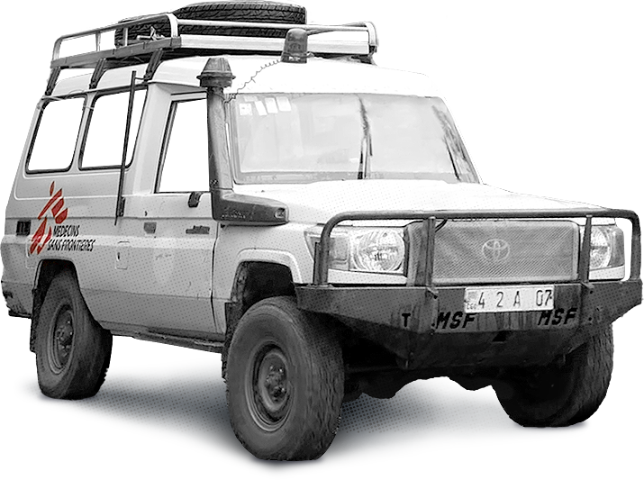
알고 계셨나요?
국경없는의사회 한국 사무소가 생기기 이전인 2004년부터
의료 전문의였던 최초의 한국인 구호 활동가를 포함하여
적극적으로 신념을 밝혀 온 한국인들이 많았습니다.
보다 많은 사람들이 국경없는의사회의 공식 일원으로 나설 수 있도록
2012년 2월 22일, 한국에 27번째 국경없는의사회 사무소를 열게 되었고,
그로부터 한국 사무소의 정식 임무가 시작되었습니다.
2012년 한국 사무소의 첫 해,
모금 활동을 통해 모인 약 1억원의 후원금으로 의사, 약사, 행정 및 재무 관리자 등의 한국인 현장 활동가 6명을 채용,
나이지리아 Nigeria, 남수단 South Sudan, 에티오피아 Ethiopia 와 같이 기본적인 의료 서비스가 부족한 곳을 우선 파견하는 데 사용하였으며,
후원금의 80% 이상을 현장 프로그램 및 인도주의 활동에만 몰두했습니다.
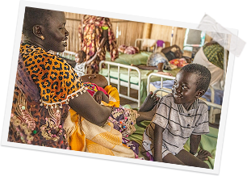
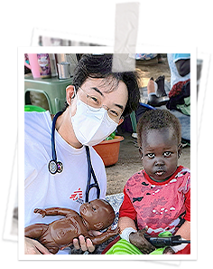
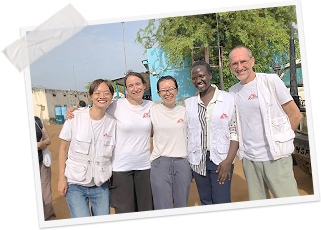
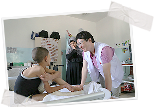
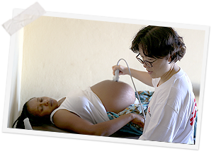
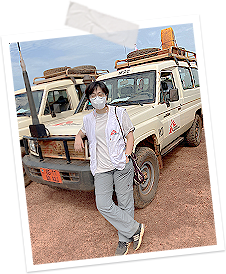
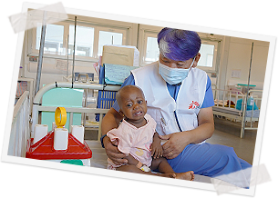
10년간 후원자분들의 지지와 응원으로 충실히 임무를 수행해 온 결과,
2021년 한 해동안 한국에서만 한국 사무소 설립 첫 해의 300배가 넘는 후원금이 모금되었습니다.
이는 코로나 긴급 대응을 포함, 72개국의 465개 프로젝트를 통해
260만명의 외래 환자를 치료하고, 15만명의 외과 수술을 지원하며, 10만명의 출산을 지원할만큼
커다란 지지의 목소리였습니다.
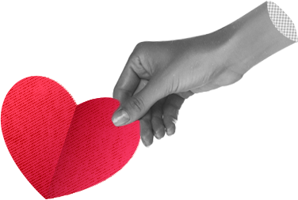
마치 물방울 하나하나가 모여 큰 바다를 이루듯
개개인의 작은 마음들도
실제로 현장에서 활동하고 계시는 분들에게는
굉장히 큰 용기가 됩니다
국경없는의사회 한국 사무소가
지난 10년간 186번의 한국인 구호 활동가 현장 파견을 지원하여
보다 더 많은 이들의 삶을 지켜낼 수 있을만큼 성장한 건
27만명의 후원자분들이 우리와 같은 신념으로 달려주신 덕분입니다.
‘도움이 필요한 곳이면 어디든 간다’ 라는 단 하나의 신념은
세계 각지의 위기 현장에서 인도주의를 실현하고, 적극적으로 의견을 표명하는 노력들을 통해 대중의 관심을 촉구한 공로로
1999년 노벨 평화상을 수상하며 세계적으로도 인정 받을 수 있는 힘을 발휘했습니다.
우리는 앞으로도 인종, 종교, 정치적인 문제를 떠나 무력 분쟁, 전염병 창궐, 의료 사각지대 등
여러 위기 속에 피해를 입어 소외되고 잊혀져가는 이들을 찾아나갈 것 입니다.
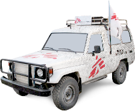
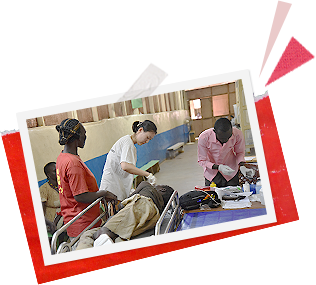
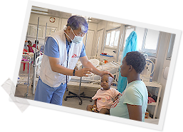
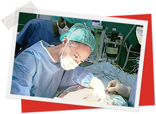

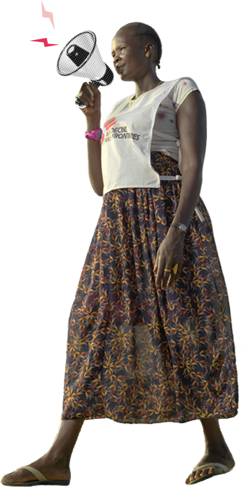
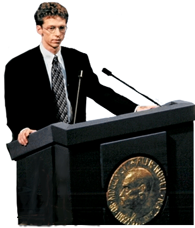
아주 작은 신념조차도 온전히 지켜낸다는 것이 얼마나 고된 일인지 우리 모두가 기억하고 있으며,
그 신념은 쉬이 바래지 않는 힘을 지녔다는 것을, 우리가 지난 10년이란 시간으로 증명했습니다.
우리가 함께 지켜낸 삶이 지속되는 순간을 더 자주 마주할 수 있도록,
우리의 신념이 국경없는 모든 곳에 닿을때까지,